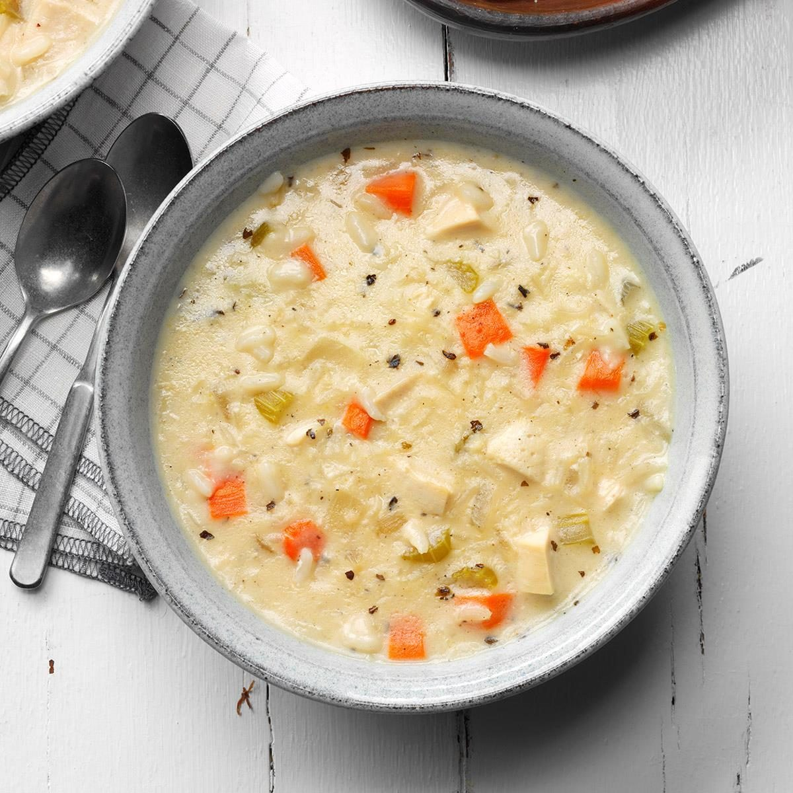
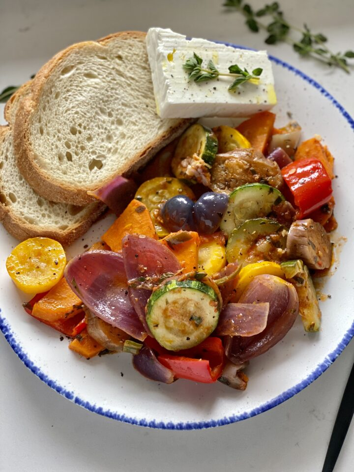
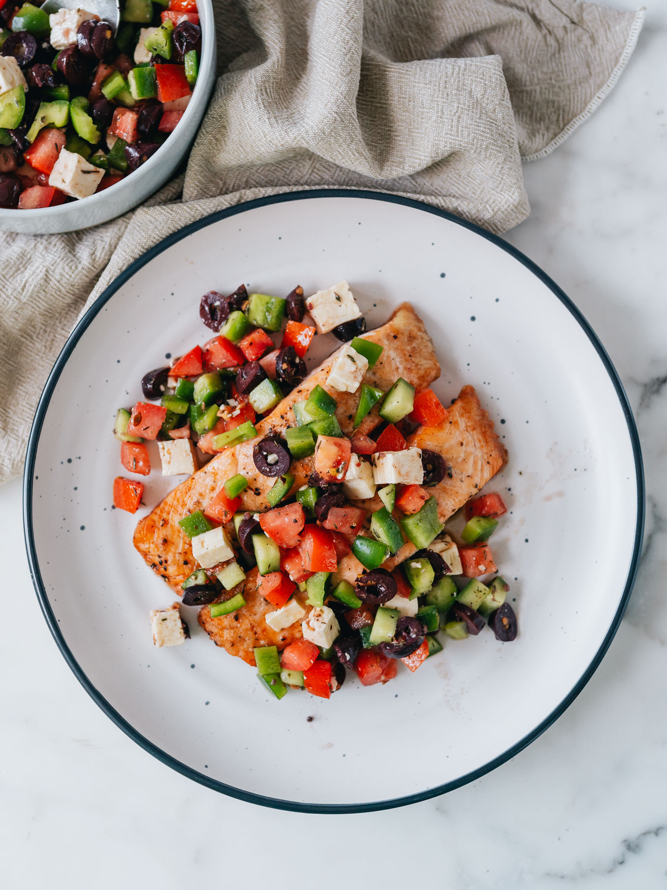

Based in Chicago, Illinois, Little Lemon is a family-owned Mediterranean restaurant, focused on traditional recipes served with a modern twist. The chefs draw inspiration from Italian, Greek, and Turkish culture and have a menu of 12–15 items that they rotate seasonally. The restaurant has a rustic and relaxed atmosphere with moderate prices, making it a popular place for a meal any time of the day.
Little Lemon is owned by two Italian brothers, Mario and Adrian, who moved to the United States to pursue their shared dream of owning a restaurant. To craft the menu, Mario relies on family recipes and his experience as a chef in Italy. Adrian does all the marketing for the restaurant and led the effort to expand the menu beyond classic Italian to incorporate additional cuisines from the Mediterranean region.
Home
Welcome to the

Restaurant
Menu




About us
Owner's history and background